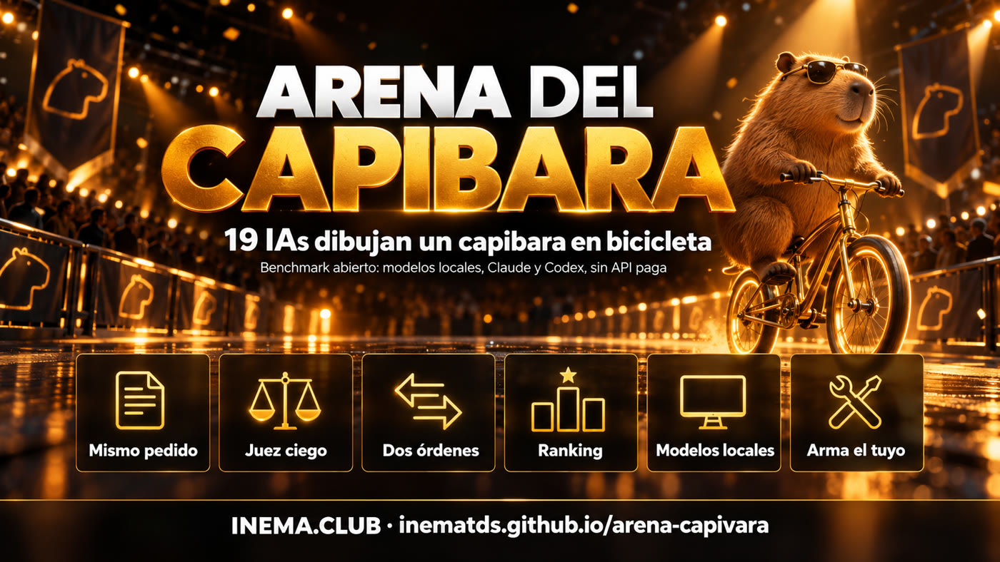

Benchmark abierto · modelos locales + suscripción · sin API de pago
¿Qué IA dibuja el mejor capibara en bicicleta?
Pedimos el mismo dibujo, en código SVG, a 19 modelos: 10 que se ejecutan en la propia computadora y 9 mediante las suscripciones de Claude y ChatGPT. Un juez comparó todo de a dos, sin saber quién hizo cada dibujo. El kit es abierto: ejecútalo con tus modelos.
Simon Willison evalúa cada modelo nuevo pidiéndole "un SVG de un pelícano andando en bicicleta". No confía en las tablas de clasificación; prefiere una prueba propia que él mismo entiende. Google ya mostró su pelícano en una presentación principal, así que cambiamos el animal.

🦫 Difícil a propósito
Un modelo de texto no dibuja: escribe código. Es difícil imaginar una bicicleta, difícil dibujar un capibara y los capibaras no pedalean. Así se ve de inmediato quién entiende las formas y la composición.
⚖️ Juez a ciegas, dos órdenes
El juez solo ve "A" y "B", sin nombres. Cada par aparece dos veces, intercambiando los lados, para anular la tendencia a preferir la izquierda. Un segundo juez de otra empresa vuelve a evaluar una muestra.
💻 Se ejecuta en casa
Modelos locales con Ollama; Claude y GPT mediante las CLI claude y codex, con la suscripción que ya pagas. No se necesita ninguna clave de API.
Ronda 1 · 05/10/2026
El podio
Claude Fable 5.1 ganó el 97% de los enfrentamientos. La sorpresa: Qwen 3.8 27B, ejecutado en la propia computadora, quedó en el 5.º puesto de 18, por delante de GPT-5.5 y Claude Sonnet 5.5. Command R 35B no entregó un SVG válido. El segundo juez (GPT-6 Luna) coincidió con el primero en el 92% de los 64 enfrentamientos que volvió a evaluar.
1.º Claude Fable 5.1 · 97% de victorias2.º GPT-6.1 Sol · 94% de victorias3.º GPT-6 Astra · 91% de victorias
El primero contra el último. El juez: "A muestra un capibara reconocible pedaleando una bicicleta bien dibujada, en una escena completa, mientras que B es solo un conjunto de formas abstractas con texto superpuesto, sin un capibara ni una bicicleta identificables."Todos los dibujos válidos, del primero al último. Ranking completo, tiempos y código de cada SVG →
Cómo funciona
Cinco scripts, uno por etapa
Cada etapa guarda sus resultados en resultados/ y omite lo que ya se hizo. Puedes detenerte y continuar después.
Envía el mismo pedido a cada modelo de modelos.json, guarda la respuesta original y extrae el <svg>. Los modelos locales se ejecutan de uno en uno para que quepan en la memoria.
Renderizar y evaluar
Convierte SVG a PNG (sin buscar nada en Internet), arma las imágenes A|B y le pide al juez un JSON con el ganador y el motivo.
Ranking y galería
Porcentaje de victorias (el dato más honesto), ELO promedio de 200 órdenes aleatorios, sesgo por lado y concordancia entre jueces. Genera la página pública en PT, EN y ES.
Requisitos previos
Qué necesitas tener instalado
Solo el primero es obligatorio. Usa los motores que tengas y quita los demás de modelos.json.
Python 3.10+
Con cairosvg (de SVG a PNG) y Pillow.
pip install cairosvg pillow
Ollama (local)
Cualquier modelo que ya hayas descargado. Un 8B funciona en una laptop; un 70B requiere unos 48 GB de memoria.
ollama pull llama3.1:8bollama list
Claude Code y/o Codex
Opcional. Inicia sesión con tu suscripción; el kit ejecuta claude -p y codex exec.
claude --versioncodex --version
Guía de uso · paso a paso
Tu arena en seis comandos
Empieza con poco: dos o tres modelos. Después agrega más.
1
Descarga el kit
Los resultados de nuestra ronda vienen incluidos en resultados/. Elimina la carpeta si quieres empezar desde cero.
Claude y Codex se ejecutan en paralelo; los modelos locales, de uno en uno. Si un modelo no devuelve SVG, queda registrado como "no entregó", lo cual también es un resultado.
python3 arena/gerar.py# o --so llama3-1-8b claude-haiku-4-5
4
Renderiza y arma los enfrentamientos
python3 arena/renderizar.py# "N imágenes válidas, M enfrentamientos armados"
5
Llama al juez (y a un segundo juez)
El predeterminado es Claude Sonnet 5.5. El segundo juez vuelve a evaluar una muestra para que sepas cuánto confiar en el primero.
python3 arena/ranking.py --tabela# tabla en la terminal + resultados/ranking.jsonpython3 arena/galeria.py# resultados/index.html (+ en/ es/)python3 -m http.server 8000# abre http://localhost:8000/resultados/
Crea tu benchmark
El capibara es solo un ejemplo. El método sirve para tu trabajo.
La lección de la presentación no es "el modelo X dibuja mejor". Es: no delegues la elección del modelo a una tabla de clasificación. Diseña una prueba pequeña que entiendas y ejecútala cuando salga un modelo nuevo.
1
Usa una tarea propiaResumir un contrato, responder a un cliente, escribir una consulta SQL. O algo tonto y difícil, como el capibara, que nadie entrenó para acertar.
2
El mismo pedido para todos, guardado en un archivoSi el prompt cambia entre modelos, estás midiendo el prompt, no el modelo. Aquí es arena/prompt.txt.
3
Guarda la respuesta originalCuando el resultado te sorprenda, querrás ver qué escribió realmente el modelo (resultados/respostas/).
4
Compara por pares, no pongas una calificación"¿A o B?" es mucho más estable que "pon una nota del 0 al 10", tanto para las personas como para los modelos.
5
Juez a ciegas, en ambos órdenes, y mide el sesgoOculta los nombres, intercambia los lados y publica cuántas veces ganó la opción de la izquierda. Usa un segundo juez e indica cuánto coincidieron.
6
Una ronda es una instantáneaSi vuelves a ejecutarla, los dibujos cambian. Para tomar una decisión importante, haz de 3 a 5 intentos por modelo.
7
Cambia el tema cuando se vuelva famosoUna prueba que se vuelve noticia acaba incorporándose al entrenamiento. El pelícano se convirtió en capibara; el capibara también cambiará.
Adapta la prueba a otra tarea
Cambia el texto de arena/prompt.txt y la pregunta del juez (PERGUNTA en arena/julgar.py). Si el resultado es texto y no un dibujo, omite renderizar.py y pídele al juez que lea ambas respuestas. Para usar el historial de Claude Code como prueba, consulta personal-benchmark.
Próximas rondas
Qué viene después
La arena está abierta. Envía tu ronda mediante un pull request.
Hecho
Ronda 1 · 05/10/202619 modelos, un intento por modelo, juez Claude Sonnet 5.5 + muestra con GPT-6 Luna.
Siguiente
Tres intentos por modeloPara distinguir un buen modelo de un dibujo afortunado.
Idea
Rondas de la comunidadCada persona ejecuta la prueba con su computadora y los modelos que tiene; el ranking reúne las rondas.
Hermano
Tríada LetalDe la misma presentación: cuándo un agente de IA puede filtrar tus datos. Ver la lista de verificación